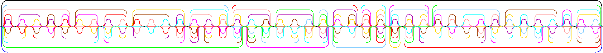
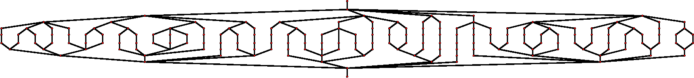
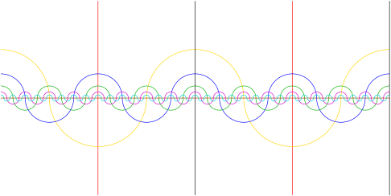
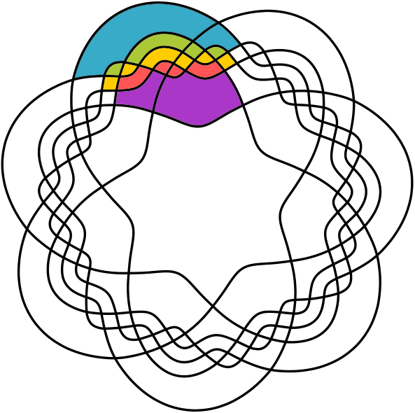
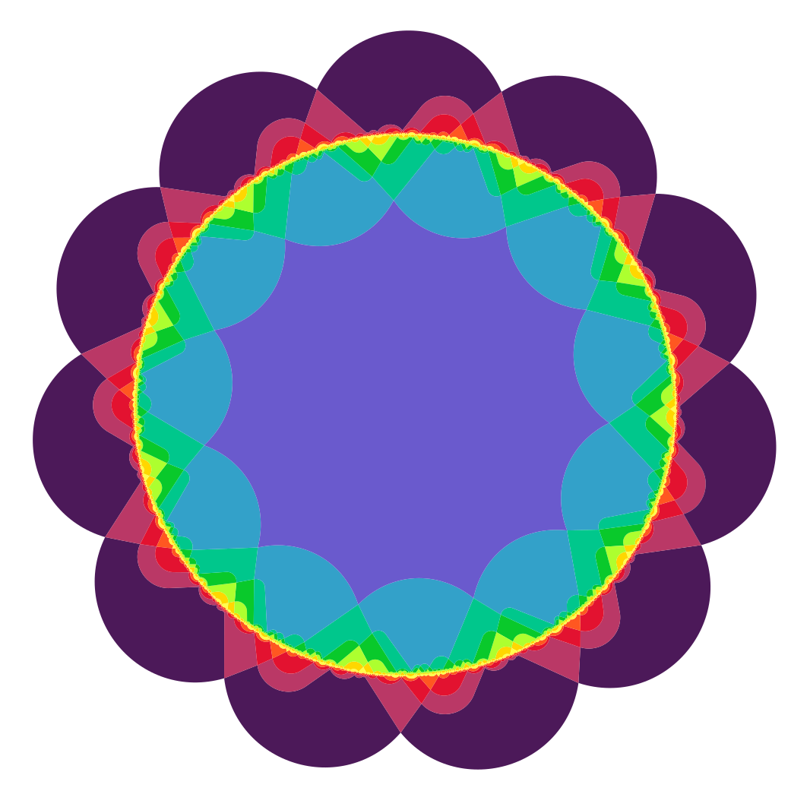

Peter Hamburger [Ha02] constructed the first symmetric 11-Venn diagram. The diagram is monotone and highly non-simple. It is very similar in form to the diagram for \(n=7\) from Subsection 4.5.2 (Symmetric Diagrams, Necklaces, and Chains) but is vastly more complicated because of increase in the the number of regions, intersection points, etc. In fact, the diagram is so intricate that it is difficult to show in a single figure. One sector of the diagram is shown in Figure 4.4.1. Successive sectors may be obtained from this one by cyclicly permuting the colors.

Figure4.4.1.A \(1/11\) sector of the cylindrical representation of Hamburger’s symmetric 11-Venn diagram. All 11 curves intersect at the left and at the right boundaries of this diagram.Figure4.4.2.A \(1/11\) sector of the cylindrical representation of Hamburger’s symmetric 11-Venn diagram, with the dual superimposed.

Figure4.4.3.The dual of \(1/11\) sector of the cylindrical representation of Hamburger’s symmetric 11-Venn diagram.
The construction method for this diagram uses a partition of the set of all bitstrings of length 11. Recall that the Venn dual can be labelled with bitstrings corresponding to regions, as we discussed Chapter 3, Graphs Associated with Venn Diagrams. The construction then uses chains of bitstrings connected together to build the large dual graph of the sector, which then is repeated to give the entire diagram.
Since the diagram is highly non-simple and not rigid, the diagram can be turned in to many others by separating any or all separable vertices. Hamburger has published variants of the diagram with vertex sets from 462 up to 1001 by increments of 11 in [Ha02b] . He and other co-authors have used similar techniques to create other diagrams; see the sub-sections below.
For \(n = 11\text{,}\) the minimum possible number of vertices is \(\lceil (2^{11} - 2) / 10 \rceil = 205\text{.}\) This is not divisible by 11, so the smallest number of vertices possible in a symmetric 11-Venn diagram is at least \(209 = 11 \cdot 19\text{.}\) In [HS03] Hamburger and Sali extended the above method to produce a diagram with \(231 = 11 \cdot 21\) vertices, quite close to the minimum possible, and then later found a diagram with \(220 = 11 \cdot 20\) vertices (as yet unpublished - thanks to Peter Hamburger for showing us the diagram). Of course, the resulting diagrams are highly non-monotone, since a monotone 11-Venn diagram has at least \({11 \choose 5} = 462 = 11 \cdot 42\) vertices by Theorem 3.5.2.
Many of the symmetric 11-Venn diagrams mentioned here, in papers by Peter Hamburger and his co-authors, have been turned into works of art by the artist Edit Hepp, Hamburger’s spouse. Readers are encouraged to seek out the papers in print to view the diagrams. The processes used to create the artwork are explained in [HH] .
Although Hamburger found a non-simple symmetric 11-Venn diagram, there seemed little hope of extending his ad-hoc methodology or diagrams to get a simple symmetric 11-Venn diagram; some significant new insights were needed. Some people had attempted algorithmic solutions, but had met with failure because the potential solution space is so huge. In this sub-subsection we will give an outline of an approach that succeeded along with some relevant figures, some of which are rather attractive.
One strategy is to reduce the size of the potential solution space by imposing additional constraints on the diagrams, but one has to be careful; too much constraint and there may be no such diagram, too little and the solution space can still be to large. Mamakani’s approach was to look for additional properties in subsets of the set of symmetric 7-Venn diagrams. To that end, we define a “crosscut” in a Venn diagram.
Definition4.4.4.
A crosscut in a simple monotone \(n\)-Venn diagram is a segment of a curve that extends from the innermost face to the (unbounded) outermost face, and intersects each of the other \(n-1\) curves exactly once.
Imagine a curve \(C\) in a Venn diagram. By Theorem 3.3.4 the \(C\) can touch the outer face at most once, and the inner face at most once. Hence, it is impossible for \(C\) to have 3 or more crosscuts in a Venn diagram. For a curve in a \(n\)-Venn diagram to have 2 crosscuts, that curve must have exactly \(2(n-1)\) intersections with other curves in the diagram; that is, such a curve must intersect all \(n-1\) curves as it extends from the unbounded exterior to the interior of all the curves, and then hit all \(n-1\) curves again as it returns to the unbounded exterior; let us call such a curve a mint curve, since it has the minimum number of intersections possible in a Venn diagram.
For each \(n\) there is an \(n\)-Venn diagram in which two distinct curves have two crosscuts; that is, the Venn diagram contains two mint curves. For example consider the cylindrical projection of Edwards 8-Venn diagram shown in Figure 4.4.5. Observe that the red and black curves are mint curves; each part of the curve drawn as a straight line intersects 6 curves, and the 7th intersection is a red-black intersection. For \(n > 5\) it is not known whether there exists an \(n\)-Venn diagram with 3 or more mint curves.

Figure4.4.5.Cylindrical drawing of Edwards 8-Venn diagram. The black and red curves are mint curves.
Theorem4.4.6.
If \(n \gt 3\text{,}\) then a simple symmetric \(n\)-Venn diagram has a most one crosscut per curve.
Proof.
We argued above that a curve in a Venn diagram can not have three or more crosscuts. Suppose that there is a mint curve in a symmetric \(n\)-Venn diagram. Since the diagram is symmetric, every curve must be a mint curve, and thus the total number of intersections (vertices) in the diagram is \(n(n-1)\text{.}\) On the other hand, a simple \(n\)-Venn diagram has exactly \(2^n-2\) vertices. The equation \(n(n-1) = 2^n-2\) has a solution for \(n = 1,2,3\text{,}\) but not for any \(n > 3\text{.}\)
The \(7\)-Venn diagrams with a crosscut are Hamilton (P2), Manawatu (P6), Victoria (P4), M4, M5, M11, M12, and M15. This is easily verified examining the drawings in Figure 4.3.1 and Figure 4.3.3, or by looking for subsequences in the Grunbaum encodings of the form \(1 \ c_2 c_3 c_4 c_5 c_6\text{,}\) where \(c_2 c_3 c_4 c_5 c_6\) is a permutation of \(2,3,4,5,6\text{.}\) For example, in M11 4.3.3, and referring to Table 4.3.4, the subsequence is \(142356\text{.}\)

Figure4.4.7.A cluster in the symmetric Venn diagram M4.
However, restricting the search to only diagrams with a crosscut still took too long, and so the search was further refined by looking for some symmetric substructures within the diagrams possessing a crosscut. Consider Figure 4.4.7. The colored part of the diagram is called a cluster; it is an edge-connected collection of regions, that, when rotated \(n\) times, uniquely accounts for each face of the Venn diagram, except for the innermost and outermost faces. The particular cluster shown has a symmetric substructure when reflected about the crosscut, as shown in Figure 4.4.8.
Figure4.4.8.A cluster in the symmetric Venn diagram M4, cylindrical representation.
We can formalize the symmetry that we observe in Figure 4.4.8 by considering lists of curve intersections. Assume that the curves have been labelled \(1,2,\ldots,n,\) in clockwise order where the crosscut is \(C_1\text{.}\)

Figure4.4.9.Newroz, the first simple symmetric 11-Venn diagram.
Theorem4.4.10.
There is no monotone simple symmetric \(n\)-Venn diagram with crosscut and polar symmetry for \(n \gt 7\text{.}\)
Subsection4.4.1Symmetric diagrams with \(n = 13\) curves
When the same approach used in the previous section is applied to try and find a symmetric 13-Venn diagram, the seach space seemed to be too large and no solution was produced. However, by refining the idea of a crosscut, many solutions were eventually found. Let us re-examine a diagram the has crosscut symmetry,